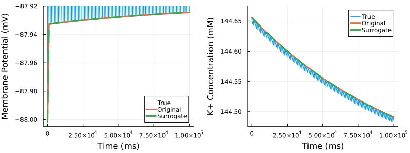

Surrogates
Sometimes, a model can be very expensive to solve. In other instances, we may be required to solve the same model many times, such as with Duplicated Components. In these instances, it can be useful to generate a surrogate machine learning model which approximates the output, and can do it faster than model solving.
Surrogates of components can be generated in Mermaid. The component will train a surrogate to learn the step! function.
Building a surrogate component
using OrdinaryDiffEq, Random, Mermaid, BenchmarkTools, Plots
using Surrogates
using CellMLToolkit
ml = CellModel("ohara_rudy_cipa_v1_2017.cellml")
tspan = (0, 1000.0)
longtime = 100000.0
n_samples = 1000
prob = ODEProblem(ml, tspan)
V = ml.sys.membrane₊v
Ki = ml.sys.intracellular_ions₊ki
# Slightly perturb initial conditions
prob[V] = -95.0
prob[Ki] = 144.0
comp1 = DEComponent(prob, Tsit5();
name = "cell", time_step = 1000.0, state_names = Dict("v" => V, "ki" => Ki),
intkwargs = (abstol = 1e-10, reltol = 1e-10, save_everystep = false, maxiters = Inf)
)
lb = prob.u0 - 0.01*abs.(prob.u0)
ub = prob.u0 + 0.01*abs.(prob.u0)
# Create a surrogate component
surrogate_comp = SurrogateComponent(comp1, SecondOrderPolynomialSurrogate, lb, ub;
n_samples = n_samples)Comparing performance
Surrogates main use is to provide faster solutions to a model or simulation. However, faster performance is not guaranteed. Surrogates are frequently more performant but this should still be measured.
In this section, we will compare how our surrogate performs compared with solving the original ODE formulation.
# Set up initial conditions for timing test
alg = MinimumTimeStepper()
# Benchmark the original component
mp1 = MermaidProblem(components = [comp1], connectors = Connector[], max_t = longtime)
ori_int = init(mp1, alg; save_vars = ["cell.v", "cell.ki"])
original_time = @benchmark solve!(int) setup = (int = deepcopy(ori_int))
# Benchmark the surrogate component
mp2 = MermaidProblem(components = [surrogate_comp], connectors = Connector[], max_t = longtime)
surr_int = init(mp2, alg; save_vars = ["cell.v", "cell.ki"])
surrogate_time = @benchmark solve!(int) setup = (int = deepcopy(surr_int))
println("Original component minimum time: ", minimum(original_time.times) / 1e6, " ms")
println("Surrogate component minimum time: ", minimum(surrogate_time.times) / 1e6, " ms")
println("Speedup: ", minimum(original_time.times) / minimum(surrogate_time.times), "x")Original component minimum time: 30469.189077 ms
Surrogate component minimum time: 64.21031 ms
Speedup: 474.52175635034314xComparing accuracy
Even if a surrogate model is performant, you should also verify its accuracy.
In this section, we will compare plots of both the original ODE component and the surrogate component for two variables. We also see how the true solution oscillates every 1000ms.
sol = solve(prob; tspan = longtime, maxiters = Inf, saveat = 50, save_idxs = [V, Ki])
sol1 = solve!(ori_int)
sol2 = solve!(surr_int)
p1 = plot(sol.t, sol[V], label = "True", linewidth = 1)
p2 = plot(sol.t, sol[Ki], label = "True", linewidth = 1)
plot!(p1, sol1.t, sol1["cell.v"], label = "Original", linewidth = 3)
plot!(p1, sol2.t, sol2["cell.v"], label = "Surrogate", linestyle = :dash, linewidth = 3)
xlabel!(p1, "Time (ms)")
plot!(p2, sol1.t, sol1["cell.ki"], label = "Original", linewidth = 3)
plot!(p2, sol2.t, sol2["cell.ki"], label = "Surrogate", linestyle = :dash, linewidth = 3)
xlabel!(p2, "Time (ms)")
ylims!(p1, -88.005, -87.92)
ylims!(p2, 144.475, 144.675)
ylabel!(p1, "Membrane Potential (mV)")
ylabel!(p2, "K+ Concentration (mM)")
fig = plot(p1, p2, layout = (1, 2), size = (800, 300), right_margin = 4Plots.mm,
bottom_margin = 5Plots.mm, left_margin = 3Plots.mm)GKS: cannot open display - headless operation mode active